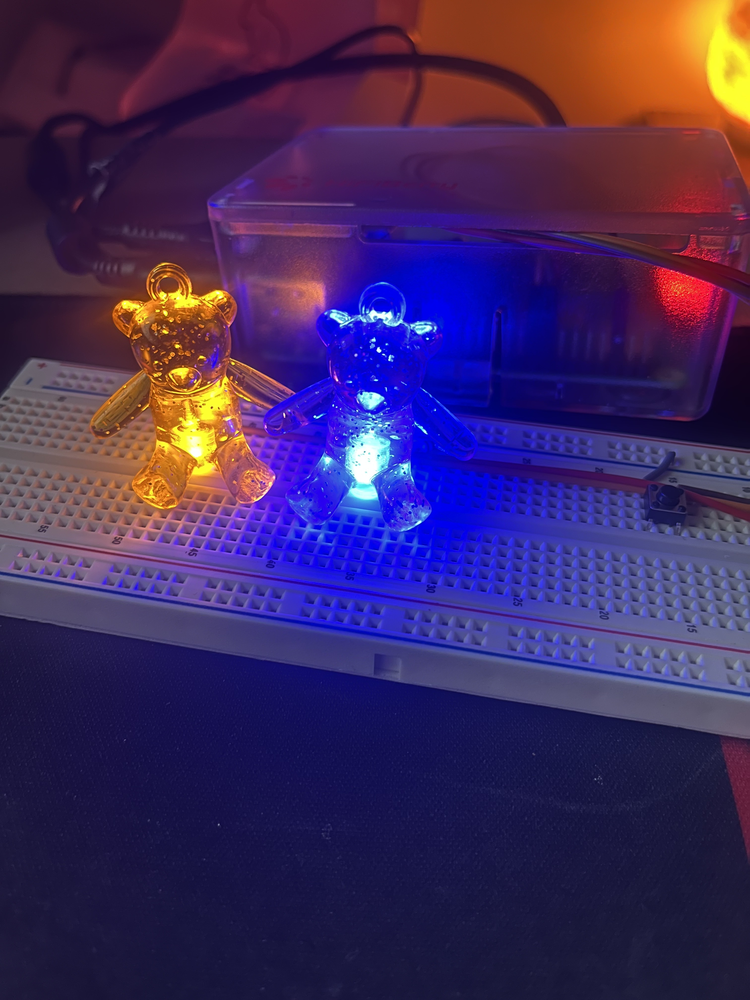

Images
Final Prototype!

Circuit Schematic

This project is cute interactive bear nightlight representing Po from Kung Fu Panda (Blue), and Winnie the Poo (Yellow).When you mention Po's favourite food, dumplings, Po will blink 3 times to indicate approval and agreement. Likewise, Winnie will blink when you talk about honey. Due to a delay in speech processing time, there may be a 3-5 second delay between when the word is said and the responding blinks.
Final Prototype!
